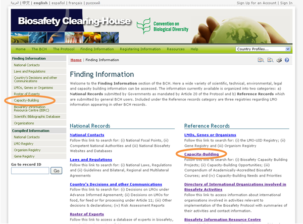
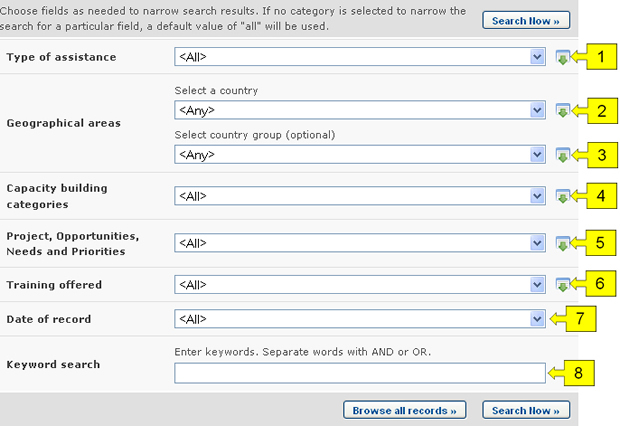
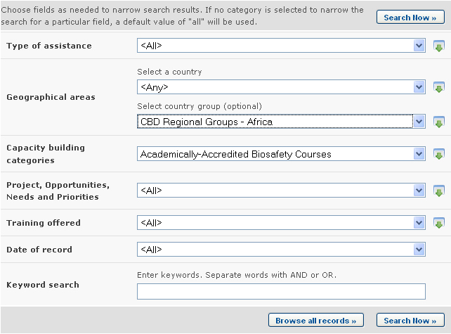
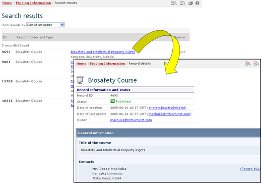

URL: http://bch.cbd.int/database/activities/
Bajo el Artículo 22 se requiere que las Partes cooperen en el desarrollo y/o fortalecimiento de los recursos humanos y la capacidad institucional para la eficaz implementación del Protocolo. A través del CIISB, las Partes y otros interesados pueden acceder a información sobre creación de capacidad y otros tipos de asistencia para la implementación del Protocolo. Adicionalmente, los gobiernos pueden ingresar sus necesidades y prioridades de creación de capacidad en el CIISB.
La página de búsqueda de información acerca de Creación de Capacidad puede accederse en el vínculo del menú Búsqueda de Información localizado en la barra de navegación, en el vínculo ubicado en la barra izquierda de la página Búsqueda de Información, o en el vínculo Creación de Capacidad del texto en la misma página.

En la página Búsqueda de información en Creación de Capacidad el usuario puede buscar lo siguiente:
-
Proyectos de Creación de Capacidad en Bioseguridad;
-
Oportunidades de Creación de Capacidad;
-
Necesidades y Prioridades de Creación de Capacidad;
-
Cursos sobre Bioseguridad con acreditación académica;
-
Resultados y lecciones aprendidas.
En la página Búsqueda de información en Creación de Capacidad hay varios cuadros de criterios de búsqueda:
-
Tipo de asistencia: Lista de selección para refinar los resultados obteniendo aquellos países que brindan o solicitan asistencia.
-
País: Campo de lista de selección para seleccionar un país.
-
Región: Campo de lista de selección para seleccionar una región.
-
Categorías de creación de capacidad: Lista de selcción para acotar resultados a aquellos registros que estén relacionados con cierta categoría de creación de capacidad.
-
Proyectos, oportunidades, necesidades y prioridades: Campo de criterio de búsqueda adicional para agregar más criterios a fin de refinar los resultados de la búsqueda. Al seleccionar ítems de esta lista podrá hacer aparecer los siguientes nuevos campos:
-
Nombre del proyecto: campo de palabra clave para buscar por nombre de proyecto.
-
Áreas de creación de capacidad: Lista de selección para refinar los resultados de la búsqueda por area de creación de capacidad.
-
Estado; Lista de selección para acotar la búsqueda según el estado del proyecto.
-
Tipo de organismo ejecutor: Lista de selección para limitar los resultados de la búsqueda a aquellos registros que coincidan con los tipos de organismo ejecutor especificados.
-
Organización directora: Campo de palabra clave para buscar por organización.
-
Fuente de financiación: Lista de selección para refinar los resultados de la búsqueda según fuentes de financiación específicas.
-
-
Capacitación ofrecida: Campo de criterio de búsqueda adicional para agregar más criterios a fin de refinar los resultados de la búsqueda. Al seleccionar ítems de esta lista podrá hacer aparecer los siguientes nuevos campos:
-
Área temática: Lista de selección para limitar los resultados a ciertas areas temáticas en la capacitación ofrecida.
-
Tipo de acreditación: Lista de selección para refinar los resultados a cierto tipo de acreditación.
-
-
Fecha del Registro: Campo de fecha para acotar la búsqueda a un cierto intervalo de tiempo.
-
Búsqueda por Palabra clave: Palabra clave para refinar resultados según palabras claves.
Vea “cómo usar las páginas de búsqueda” para aprender sobre distintos tipos de campos y su forma de operar.

Ejemplo. Un usuario desea obtener información sobre cursos de creación de capacidad en países Africanos. El usuario selecciona (i) Grupos Regionales del CDB - África en el cuadro Áreas geográficas, Grupo de país, (ii) Cursos de Bioseguridad con Acreditación Académica en el cuadro Categorías de Creación de Capacidad. Al hacer clic sobre el botón Realizar la búsqueda se obtienen los resultados. La información acerca de cada uno de esos resultados puede obtenerse haciendo clic en el título del registro.


Esta imagen fue tomada en Febrero del 2010 con el único propósito de proveer un ejemplo sobre el uso del CIISB.